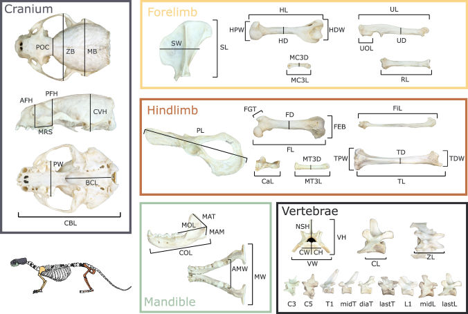

Mammalian skeletal diversity
How does heritability, biomechanics, & paleoclimatic changes influence the evolution of the mammalian skeleton?
My research program examines how morphological variation affects the performance, behavior, and ecology of animals at the species- and individual-levels. Specifically, I test the mechanisms that contribute to (1) the generation and maintenance of species and phenotypic diversity across macroevolutionary scales and (2) the variation of survival and fitness between individuals within single populations.
NSF DBI-2128146. IntBIO: Disentangling the genetic, biomechanical, and deep-time factors underlying mammalian skeletal diversity
NSF DBI-1906248. PFB: Evolution of body shape in carnivoran mammals
NSF DEB-1700989. DISSERTATION RESEARCH: The effects of sexual dimorphism on morphological diversification of Musteloidea
NSF GRFP: Anvil or jaws: linking feeding performance & energetics to intraspecific dietary specialization
How does heritability, biomechanics, & paleoclimatic changes influence the evolution of the mammalian skeleton?

Mammals vary in a magnitude of body shapes from robust tank-like elephants to elongate weasels. What drive these patterns?

Some sea otters use tools to break hard-shelled seafood, but others don't. Does this variation influence individual foraging success?
Mammals exhibit different locomotor ecologies & mechanics. How are the external & internal morphologies of limb bones adapted?

Do individuals living in cooler environments exhibit more elongate bodies than individuals living in warmer climates?

Sea otters eat a variety of hard-shelled sea food. What adaptations enable them to break open these different hard prey items?

There are over 56 described mustelids but only 14 raccoons, 12 skunks, and 1 red panda. What led to this incredible species disparity?

Do evolutionary changes in cranial size and shape lead to enhanced bite force?

Sexual dimorphism is widespread across animals. How does sexual selection and niche divergence contribute to this phenomenon?

Best AI Website Creator